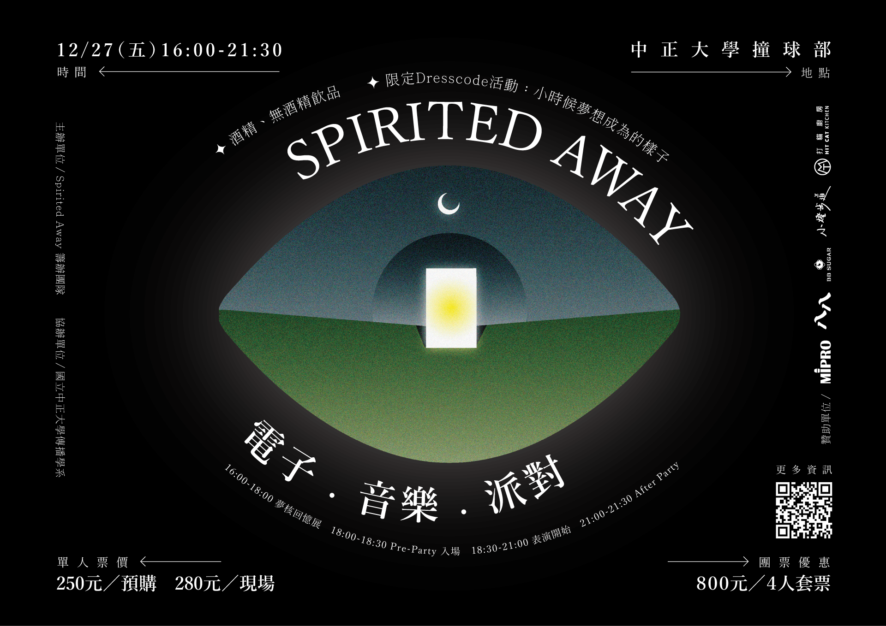
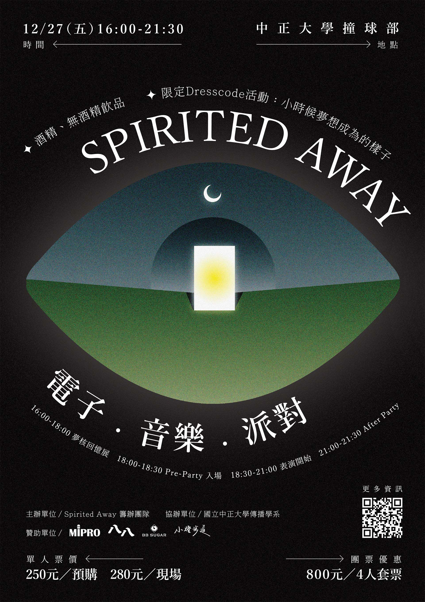
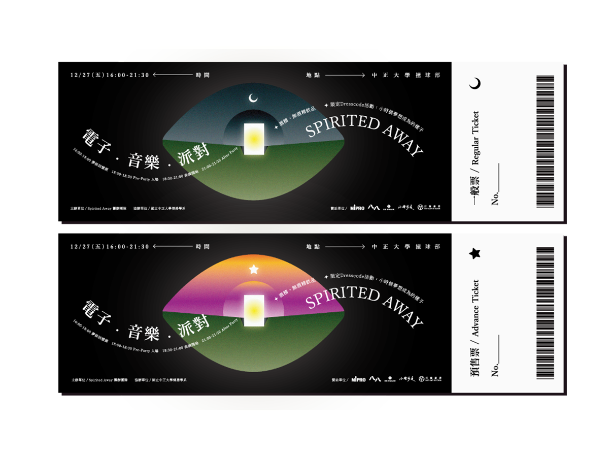
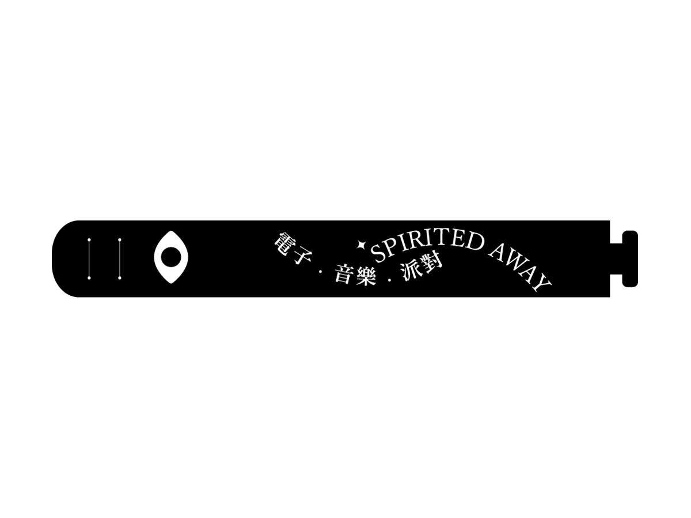
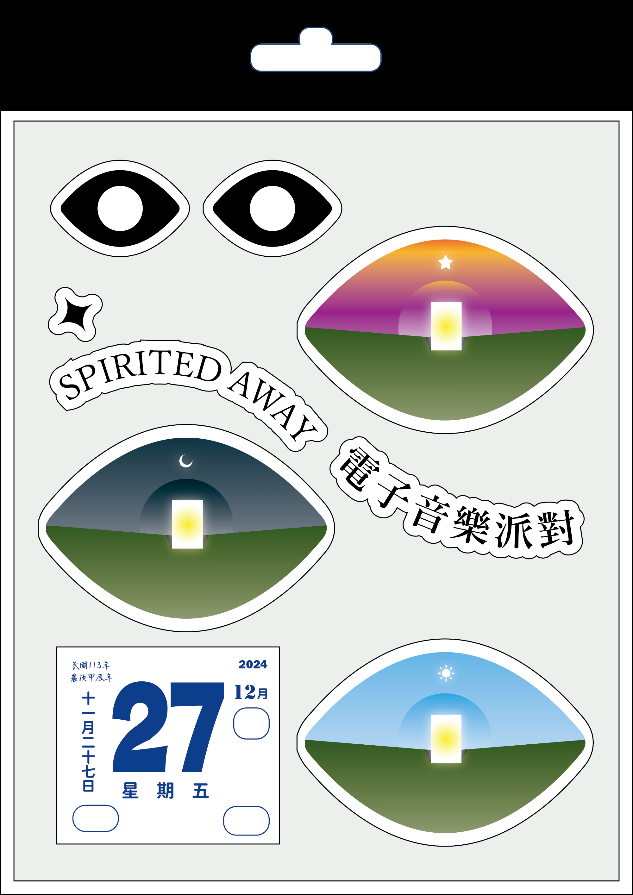

操刀《Spirited Away》電子音樂派對的整體視覺統籌。從核心的主視覺海報，延伸至入場票券、周邊貼紙組及參與識別手環，打造具備神祕感與迷幻氛圍的派對體驗。

[放入 Spirited Away《Spirited Away》結合了「夢核回憶展」與「電子音樂派對」。在主視覺的構思上，我提取了「眼睛」、「夜空中的新月」以及「通往未知的光之門」作為核心視覺符號。
排版運用了圓弧形的文字排列環繞主視覺，營造出聲音擴散與迷幻的幾何張力。配色以大面積的黑底，襯托出草地的綠與門扉的螢光黃，精準傳達出電子音樂派對那種神秘又充滿能量的氛圍。

[主視覺海報 展示 (A4比例)]實體票券與手環是參與者接觸活動的第一個實體媒介。設計上延續主視覺的神祕感，並加入了漸層色彩的變化，讓票券本身成為值得收藏的紀念品。

票券設計融入了星軌與漸層色塊（如紫橘漸層、藍綠漸層），在黑色票面的襯托下，營造出強烈的電子與未來感，同時清楚標示多人間與單人預售票的資訊。

針對派對現場的入場識別，設計了簡約俐落的識別手環。文字排版乾淨明確，確保在昏暗的派對燈光下依然能快速辨識。
從主視覺中提取經典符號，包含「窺探的雙眼」、「發光的門扉」、「復古日曆」以及「波浪造型的活動標準字」，將其轉化為一系列具備收藏價值的造型貼紙組。

[放入 周邊貼紙組 設計圖